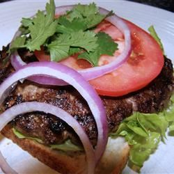

Hamburger Recipe

Description
The best hamburger recipe you can find. Made with lamb and uses spices with Indian influence
Serves 4. Allow 15 minutes for prep work and an additional 5 minutes to cook the burgers.
Ingredients
- 1 pound ground lamb
- 1 Tbsp egg
- 0.5 tsp ginger paste
- 0.5 tsp garlic paste
- 2 tsps garam masala
- 1 tsp dried cilantro
- 4 hamburger buns, split and roasted
Steps
- Step One: Preheat an outdoor grill for medium-high heat; lightly oil grate
- Step Two: Place the lamb, egg, ginger, garlic, garam masala, and cilantro into a mixing bowl; mix well.
Form into 4 patties. Cook on the preheated grill to your desired degree of doneness (rec. 3 minutes per side for medium-well). Serve on toasted buns.